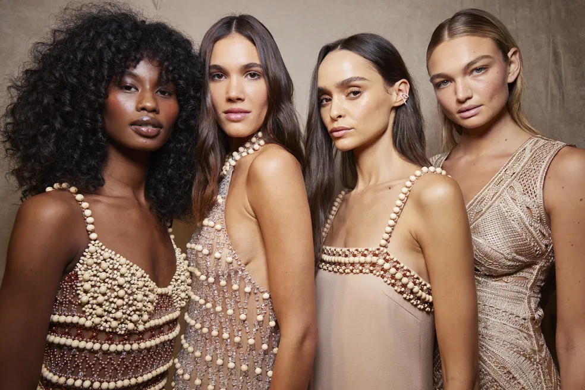

INTRODUÇÃO À MODA
História e Evolução
A história do design da moda está intrinsecamente ligada á evolução da sociedade, da cultura e da tecnologia. Desde os primórdios da moda, onde as roupas eram especialmente costuradas á mão, já se eram criadas as famosas tendências, com as quais temos suas atualizações á cada semana atualmente, por exemplo. O design de moda é resultado de diversas manipulações dos elementos que á compõem, dentre elas estão: a cor, o formato e a silhueta, a textura e os materiais utilizados.
Importância Social e Cultural
Assim como pode ser considerada uma expressão de estilo pessoal, a Moda, diferentemente do que muitos pensaam, pode trazer aspectos culturais. Isto ocorre porque ela mescla a estética e a inovação de uma peça, transformando-a em história. Desta forma, se destacada da maneira correta pode representar toda uma situação social. E aí? Vamos conferir algumas vezes que em que a Moda não foi somente uma expressão, mas também um ato político?
Zuzu Angel - Estilista Mineira (1971)
A estilista brasileira que se opôs ao regime ditatorial brasileiro, Zuleika Angel Jones, também conhecida como Zuzu Angel, será o nosso primeiro tópico de discussão. Nascida na cidade de Curvelo, em Minas gerais, a mineira ganhou fama após, através da Moda, confrontar o Governo durante o duro regime da época. Em suma, os seus desfiles se basearam muito na cultura baiana, pricipalmemte nas cores fortes e alegres que trazia aos seus desfiles nas passarelas americanas. A caracterização de suas roupas, além das cores, trazia muito da cultura brasileira como, por exemplo, a forma e silhueta e os materiais utilizados na construção de suas coleções.
Balenciaga e a guerra na Ucrânia
Como segundo tópico, por que não abordarmos uma das marcas mais polêmicas da atualidade? E como sempre, Balenciaga ataca de novo, mas desta vez, no alvo certo. Todos já ouviram falar dos desfiles insanos desta marca, independentemente de gostarmos ou não, sabemos que ela está aqui para causar. Mas o que ela tem com relação a guerra que está sendo muito pautada na Ucrânia?
Em aspectos pautados em torno da vida do diretor criativo Demna Gsavalia, foi criado um grande cenário nos desfiles da Balenciaga. O estilista que já foi um refugiado da Ucrânia, tenta relatar e demonstrar em sua obra as dificuldades de um imigrante ucraniano ao fugir de seu país em pleno inverno - coisa que, obviamente, tem ocorrido muito desde o início do conflito. Os modelos enfrentavam toda a neve e o próprio vento, que dificultava suas passadas. Além de ter adaptado o cenário intrigante, Gsavalia ainda cria, nos volumes e texturas das peças, um aspecto que relata a sobrevivência destes refugiados através de cortes e rasgos, e também, sacos de lixo. O que mais marcou o desfile de Damna Gsavalia foi, principalmente, a cor utilizada em seu desfile, o PRETO. Isto implicava a dor e o luto de sua trajetória, onde acabou perdendo tudo. As únicas cores chamativas que adentraram naquela passarela, vinha composta e representada por leds, para que houvesse um foco. No lado político da Moda, isso revela um apelo para que os demais abrissem os olhos em relação aos acontecimentos mundiais.
PatBo e a feminilidade brasileira nas passarelas
Saindo do desespero e dos conflitos políticos na moda, quem gosta de acompanha esse mundo e é brasileiro certamente já ouviu falar da PatBo - marca criada pela brasileira Patricia Bonaldi. A marca que já foi utilizada por Beyoncé tem ganhado destaque na gringa, especialmente por seu trabalho à mão tão detalhista.
Patricia Bonaldi, uma estilista - também - mineira, ficou conhecida por seus bordados a mão e diferentemente de outras grifes, representada por trabalhos artesanais com muitas pérolas, paêtes, rendas e seda. Essa combinaçao de texturas e volumes e cores traz às passarelas gringas a leveza que o Brasil transpassa, principalmente por sua característica delicada e trabalhada à mão, lembrando, por exemplo, uma energia praiana. A marca PatBo surgiu em 2012 e desde então tem ganhado o coração das fashionistas e cool hunters, tendo como seu maior registro, seus bordados.